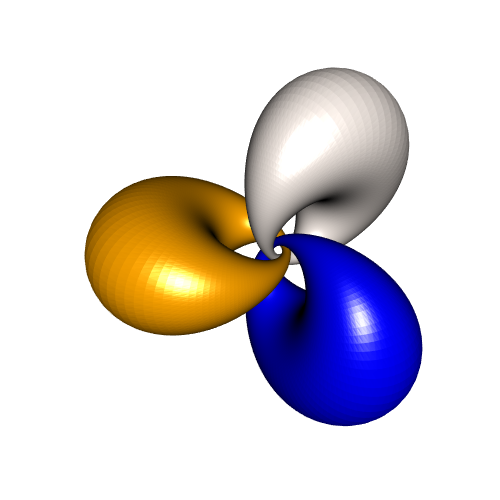
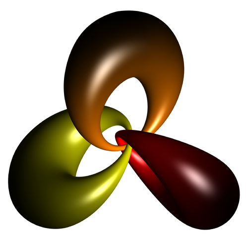
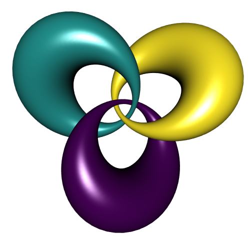
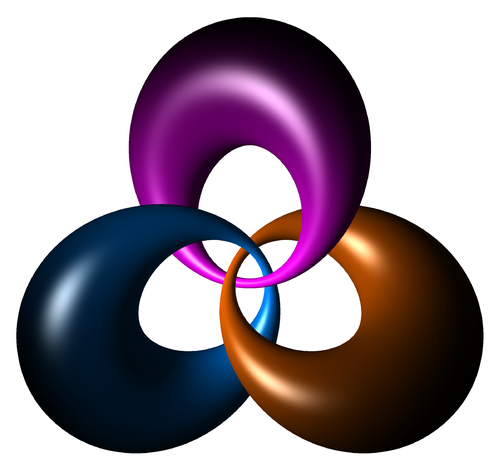

Parameterization of linked cyclides
Posted on August 28, 2018
by Stéphane Laurent
In a previous post, I have shown how to draw some linked cyclides as unions of circles. In fact it is easy to parametrize the linked cyclides.
We show how to do so with R.
# "inverse" Hopf map
hopfinverse <- function(q, t){
1/sqrt(2*(1+q[3])) * c(q[1]*cos(t)+q[2]*sin(t),
sin(t)*(1+q[3]),
cos(t)*(1+q[3]),
q[1]*sin(t)-q[2]*cos(t))
}
# stereographic projection
stereog <- function(x){
c(x[1], x[2], x[3])/(1-x[4])
}
# rotation in 4D space (right-isoclinic)
rotate4d <- function(alpha, beta, xi, vec){
a = cos(xi)
b = sin(alpha)*cos(beta)*sin(xi)
c = sin(alpha)*sin(beta)*sin(xi)
d = cos(alpha)*sin(xi)
p = vec[1]; q = vec[2]; r = vec[3]; s = vec[4]
c(a*p - b*q - c*r - d*s,
a*q + b*p + c*s - d*r,
a*r - b*s + c*p + d*q,
a*s + b*r - c*q + d*p)
}
phi <- 1 # -pi/2 < phi < pi/2; close to pi/2 <=> big hole
f1 <- function(theta, t){
p <- c(cos(theta)*cos(phi), sin(theta)*cos(phi), sin(phi))
h <- hopfinverse(p, t)
hr <- rotate4d(pi/2, 0, 1, h)
stereog(hr)
}
f2 <- function(theta, t){
p <- c(cos(theta)*cos(phi), sin(theta)*cos(phi), sin(phi))
h <- hopfinverse(p, t)
hr <- rotate4d(pi/2, 2*pi/3, 1, h)
stereog(hr)
}
f3 <- function(theta, t){
p <- c(cos(theta)*cos(phi), sin(theta)*cos(phi), sin(phi))
h <- hopfinverse(p, t)
hr <- rotate4d(pi/2, 4*pi/3, 1, h)
stereog(hr)
}
f1x <- Vectorize(function(u,v) f1(u,v)[1])
f1y <- Vectorize(function(u,v) f1(u,v)[2])
f1z <- Vectorize(function(u,v) f1(u,v)[3])
f2x <- Vectorize(function(u,v) f2(u,v)[1])
f2y <- Vectorize(function(u,v) f2(u,v)[2])
f2z <- Vectorize(function(u,v) f2(u,v)[3])
f3x <- Vectorize(function(u,v) f3(u,v)[1])
f3y <- Vectorize(function(u,v) f3(u,v)[2])
f3z <- Vectorize(function(u,v) f3(u,v)[3])
library(misc3d)
library(rgl)
open3d(windowRect=c(50,50,550,550))
view3d(90,0)
n <- 300
parametric3d(f1x,f1y,f1z, umin=0,umax=2*pi, vmin=0,vmax=2*pi,
n=n,
smooth=TRUE, color="chocolate")
parametric3d(f2x,f2y,f2z, umin=0,umax=2*pi, vmin=0,vmax=2*pi,
n=n,
smooth=TRUE, color="midnightblue", add=TRUE)
parametric3d(f3x,f3y,f3z, umin=0,umax=2*pi, vmin=0,vmax=2*pi,
n=n,
smooth=TRUE, color="firebrick4", add=TRUE)This code generates the following picture:

And here is a three.js drawing:
Finally, here is a beautiful Asymptote rendering:

It is generated by this code:
settings.render = 4;
settings.outformat = "pdf";
// import modules
import three;
import solids;
import palette;
// overall settings
currentprojection = orthographic(20,6,6);
viewportmargin = (10,10);
size(10cm);
currentlight = ((3,3,0));
// "inverse" Hopf map ----------------------------------------------------------
real[] hopfinverse(triple q, real t){
real f = 1/sqrt(2*(1+q.z));
real[] out = {f*(q.x*cos(t)+q.y*sin(t)),
f*sin(t)*(1+q.z),
f*cos(t)*(1+q.z),
f*(q.x*sin(t)-q.y*cos(t))};
return out;
}
// stereographic projection ----------------------------------------------------
triple stereog(real[] x){
return (x[0],x[1],x[2])/(1-x[3]);
}
// rotation in 4D space (right-isoclinic) --------------------------------------
real[] rotate4d(real alpha, real beta, real xi, real[] vec){
real a = cos(xi);
real b = sin(alpha)*cos(beta)*sin(xi);
real c = sin(alpha)*sin(beta)*sin(xi);
real d = cos(alpha)*sin(xi);
real p = vec[0];
real q = vec[1];
real r = vec[2];
real s = vec[3];
real[] out = {a*p - b*q - c*r - d*s,
a*q + b*p + c*s - d*r,
a*r - b*s + c*p + d*q,
a*s + b*r - c*q + d*p};
return out;
}
// -----------------------------------------------------------------------------
real phi = 1.2;
triple f(real theta, real t, real beta){
triple p = (cos(theta)*cos(phi), sin(theta)*cos(phi), sin(phi));
real[] h = hopfinverse(p, t);
real[] hr = rotate4d(pi/2, beta, 1, h);
return stereog(hr);
}
triple f1(pair uv){
return f(uv.x, uv.y, 0);
}
triple f2(pair uv){
return f(uv.x, uv.y, 2pi/3);
}
triple f3(pair uv){
return f(uv.x, uv.y, 4pi/3);
}
splinetype[] Notaknot = {notaknot,notaknot,notaknot};
surface s1=surface(f1,(0,0),(2pi,2pi),35,35,Notaknot,Notaknot);
s1.colors(palette(s1.map(abs), Gradient(256,orange,black)));
draw(s1,render(merge=true));
surface s2=surface(f2,(0,0),(2pi,2pi),35,35,Notaknot,Notaknot);
s2.colors(palette(s2.map(abs), Gradient(256,yellow,black)));
draw(s2,render(merge=true));
surface s3=surface(f3,(0,0),(2pi,2pi),35,35,Notaknot,Notaknot);
s3.colors(palette(s3.map(abs), Gradient(256,red,black)));
draw(s3,render(merge=true));Update 2018-12-06
Actually the three cyclides differ from each other by a rotation around the \(y\)-axis. Thus one can calculate the first one and construct the two other ones by rotation. So we can do like this in R:
library(rgl)
# "inverse" Hopf map
hopfinverse <- function(q, t){
1/sqrt(2*(1+q[3])) * c(q[1]*cos(t)+q[2]*sin(t),
sin(t)*(1+q[3]),
cos(t)*(1+q[3]),
q[1]*sin(t)-q[2]*cos(t))
}
# stereographic projection
stereog <- function(x){
c(x[1], x[2], x[3])/(1-x[4])
}
# rotation in 4D space (right-isoclinic)
rotate4d <- function(alpha, beta, xi, vec){
a = cos(xi)
b = sin(alpha)*cos(beta)*sin(xi)
c = sin(alpha)*sin(beta)*sin(xi)
d = cos(alpha)*sin(xi)
p = vec[1]; q = vec[2]; r = vec[3]; s = vec[4]
c(a*p - b*q - c*r - d*s,
a*q + b*p + c*s - d*r,
a*r - b*s + c*p + d*q,
a*s + b*r - c*q + d*p)
}
# cyclide parameterization
f <- function(phi, theta, t){ # -pi/2 < phi < pi/2
p <- c(cos(theta)*cos(phi), sin(theta)*cos(phi), sin(phi))
h <- hopfinverse(p, t)
hr <- rotate4d(pi/2, 0, 1, h)
stereog(hr)
}
# cyclide as mesh
cyclideMesh <- function(phi, nu, nv){
vs <- matrix(NA_real_, nrow=3, ncol=nu*nv)
u_ <- seq(0, 2*pi, length.out = nu+1)[-1]
v_ <- seq(0, 2*pi, length.out = nv+1)[-1]
for(i in 1:nu){
for(j in 1:nv){
vs[,(i-1)*nv+j] <- f(phi, u_[i], v_[j])
}
}
tris1 <- matrix(NA_integer_, nrow=3, ncol=nu*nv)
tris2 <- matrix(NA_integer_, nrow=3, ncol=nu*nv)
nv <- as.integer(nv)
for(i in 1L:nu){
ip1 <- ifelse(i==nu, 1L, i+1L)
for(j in 1L:nv){
jp1 <- ifelse(j==nv, 1L, j+1L)
tris1[,(i-1)*nv+j] <- c((i-1L)*nv+j,(i-1L)*nv+jp1, (ip1-1L)*nv+j)
tris2[,(i-1)*nv+j] <- c((i-1L)*nv+jp1,(ip1-1L)*nv+jp1,(ip1-1L)*nv+j)
}
}
out <- tmesh3d(
vertices = vs,
indices = cbind(tris1, tris2),
homogeneous = FALSE
)
addNormals(out)
}
# draw ####
phi <- 1.2
mesh1 <- cyclideMesh(phi, 250, 250)
n <- 3
beta_ <- seq(0, 2*pi , length.out = n+1)[-1][-n]
colors <- viridisLite::viridis(n)
open3d(windowRect=c(50,50,550,550))
view3d(0,90)
shade3d(mesh1, color = colors[1])
for(i in seq_along(beta_)){
shade3d(rotate3d(mesh1, beta_[i], 0, 1, 0), color = colors[i+1])
}

And like this in Asymptote:
settings.render = 4;
// import modules
import three;
import solids;
import palette;
// overall settings
currentprojection = orthographic(0, 5, 0);
viewportmargin = (10,10);
size(10cm);
currentlight = ((3,3,0));
// "inverse" Hopf map ----------------------------------------------------------
real[] hopfinverse(triple q, real t){
real f = 1/sqrt(2*(1+q.z));
real[] out = {f*(q.x*cos(t)+q.y*sin(t)),
f*sin(t)*(1+q.z),
f*cos(t)*(1+q.z),
f*(q.x*sin(t)-q.y*cos(t))};
return out;
}
// stereographic projection ----------------------------------------------------
triple stereog(real[] x){
return (x[0],x[1],x[2])/(1-x[3]);
}
// rotation in 4D space (right-isoclinic) --------------------------------------
real[] rotate4d(real alpha, real beta, real xi, real[] vec){
real a = cos(xi);
real b = sin(alpha)*cos(beta)*sin(xi);
real c = sin(alpha)*sin(beta)*sin(xi);
real d = cos(alpha)*sin(xi);
real p = vec[0];
real q = vec[1];
real r = vec[2];
real s = vec[3];
real[] out = {a*p - b*q - c*r - d*s,
a*q + b*p + c*s - d*r,
a*r - b*s + c*p + d*q,
a*s + b*r - c*q + d*p};
return out;
}
// parameterization ------------------------------------------------------------
real phi = 1.2;
triple f0(real theta, real t){
triple p = (cos(theta)*cos(phi), sin(theta)*cos(phi), sin(phi));
real[] h = hopfinverse(p, t);
real[] hr = rotate4d(pi/2, 0, 1, h);
return stereog(hr);
}
triple f(pair uv){
return f0(uv.x, uv.y);
}
// draw ------------------------------------------------------------------------
surface s = surface(f, (0,0), (2pi,2pi), 55, 55, Spline);
pen[] colors = Rainbow();
surface s1 = s;
s1.colors(palette(s1.map(abs), Gradient(256,colors[0],black)));
draw(s1, render(merge=true));
surface s2 = rotate(120,Y)*s;
s2.colors(palette(s2.map(abs), Gradient(256,colors[10000],black)));
draw(s2, render(merge=true));
surface s3 = rotate(240,Y)*s;
s3.colors(palette(s3.map(abs), Gradient(256,colors[30000],black)));
draw(s3, render(merge=true));
